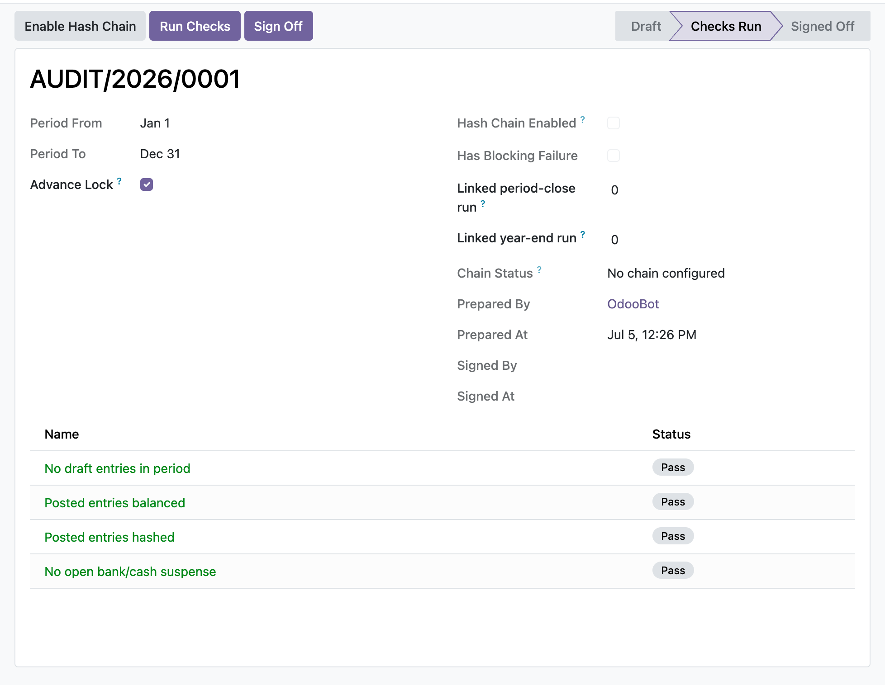

Turn on the inalterable hash chain, scan the period for integrity, and lock it under a segregated manager sign-off so a reviewer can rely on the ledger.
Sign-off does not just check that a move carries some hash; it re-derives the inalterable chain through core's per-prefix integrity check and blocks if any link fails to recompute. A move whose stored hash or a hashed field was edited underneath a stale hash is caught, not waved through.
The user who runs the checks is stamped as preparer of record on the first run and is never overwritten. Sign-off is refused if that same user attempts it, and both the preparer and signer identities are anchored so a direct RPC write cannot reassign or clear them.
Checks are rescanned against the live ledger at the moment of sign-off, so a period that has since gained a draft, unbalanced, or unhashed entry cannot be signed off on a stale stored result. An unmet blocking check, a self-sign-off, or an already-signed period each raise an explicit message.
You open a new audit pack for the March period, click Enable Hash Chain to switch restrict mode on every posting journal, then Run Checks. Two draft entries and an open bank suspense line surface as blocking and warning rows. A colleague posts the drafts and reconciles the suspense, re-runs the checks, and all four controls pass. Because segregation of duties applies, a second EH Accounting Manager reviews the pack and clicks Sign Off. The period is stamped, the chatter records who signed, and the fiscal-year lock date advances to the period end so nothing in or before March can be edited again.
In the shipped code today, each one a place where a cheaper module silently does the wrong thing.
Check rows are the sign-off gate, so they are system-written only: direct create, write, or delete is refused even for a manager, and the rows are rescanned live at sign-off so an edited stored row cannot vouch a failing period.
The hashed check does not stop at hash presence; it re-derives the chain through core and treats a recompute that errors as a blocking failure, so a tampered hash or hashed field cannot pass.
The prepared-at and signed-at timestamps cannot be written on their own, and the identity anchors accept only the acting user, so a sign-off time cannot be backdated or reassigned by RPC.
Optional period-close and year-end gates are stored as plain record ids resolved through a registry-guarded browse, so the pack installs and signs off on its own when those workflow modules are absent.
The integrity check delegates to core, which partitions the chain per sequence prefix, so a hashed journal spanning fiscal years is verified correctly instead of being mis-flagged as broken.
odoo 19 audit trail, inalterable hash chain odoo, period integrity scan, secure posting hash chain, fiscal year lock date, segregation of duties sign off, audit pack period close, tamper evident ledger odoo, posted entries hashed check, bank suspense check, accounting audit controls odoo community, immutable journal entries, period sign off odoo, restrict mode hash table

Period integrity checks and sign-offThe audit pack runs draft-entry, balance, and hash-chain integrity checks and gates the manager sign-off until every blocking check passes.
Premium ERP Heritage modules that extend the same stack, each built to the same engineering bar.
Connect Odoo partner records to the Saudi SPL National Address service and the Wathq commercial registry
One click install of the full Employment Hero integration for Odoo Community, covering the connector, two way syn...
The Malaysia country pack for the ERP Heritage Employment Hero integration
A dependency free asynchronous job queue that runs long running and fan out work out of band of the request that...
Post Irish payslips to the general ledger on the Irish chart of accounts